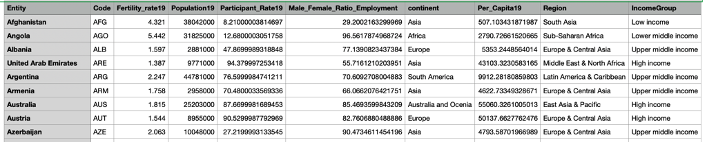

Overview of the Project:
The exploratory project shows the socio-economic indicators such as women's fertility rate, and female employment participation rates can affect the economic conditions in terms of regions in the world. The bubble chart shows an average women fertility rate in the country, the country's population, GDP (Gross Domestic Product) per capita for 2019, and the income group in bubble chart with showing in different colors in terms of region, like North America, East Asia & Pacific, Latin America & Caribbean, Middle East & North Africa, Europe & Central Asia, and South Asia. The first two bar charts demonstrate female employment rates in terms of income group and region. The last bar chart shows the average female and male population in terms of income group, and sorting through the highest to lowest percentage. The data have collected from Visit World Bank.Org! . I have collected, cleaned, and combined data. For data visualization, I have used D3, and JavaScript. The data visualization shows that women with less fertility rate and more women employment participation in a country has higher the GDP per capita.
Here are a few of the records of the data.

Indicators:
Entity: It represents each country. Code: It represents each country code. Fertility_rate19: It represents the average fertility rate of women in each country. Female_Participant_Rate19: It represents the percentage of women employment participation with women population each country for 2019. Male_Female_Ratio_Employment: It represents the percentage of women's employment participation with male employment participation in each country for 2019. continent: It represents the continents in which the country belongs. Per_Capita19: It represents the per capita income of each country for 2019. Region: It represents the region in which the country belongs. IncomeGroup: It represents the income group in which the country belongs based on the GDP per Capita.
What is GDP Per Capita?
According to www.investopedia.com, the gross domestic product of a country is an economic indicator which is the value of all productions such as goods and services made in a country in a specific time. The GDP per capita has calculated by dividing the GDP of a country by its population. It defines a person's income in a country in a specific year.
Bubble Chart:
In the bubble chart, the X-axis represents the per capita income in 2019 of a country, and the Y-axis represents the fertility rate per woman in 2019. The population of a country represents in the radius of the points. The bigger the size of the radius of the point, the population is bigger. We can easily see that countries with more fertility rates tend to be less GDP Per Capita.
Bar Charts:
In the first bart chart, the X-axis represents certain countries' regions in the bar charts, and the Y-axis represented the women's participation rates in those Regions in 2019. We can easily see North America's women have more participation rate than other regions.
The below graph shows Female Employment participant rate in terms of IncomeGroup. We can easily see that high income group has more female participation rates comapared to other groups.
So it can be other reasons, or women are facing other issues. I hope I can break down and answer the question in the upcoming narrative project.It makes me think that women's participation is less in the low-income group comapared to other groups, so to make sure I have provided the average female and male population in the project, it tells the population of both males and females equal to each other. In some cases, the female population is more than the male.
The Reason of Chosing the Topic:
First of all, I am a woman, and much research talks about women's empowerment. However, in some regions or countries, women do not get enough equality as men. They do not get enough education and a safe place to work. Since I belong to South Asia and currently living in the USA, and I can see the difference, I choose this topic to analyze. Since I want a data analyst in socio-economy development, people who do the socio-economy analysis are good for understanding the data and visualization. I think most people will easily familiar with this data visualization.